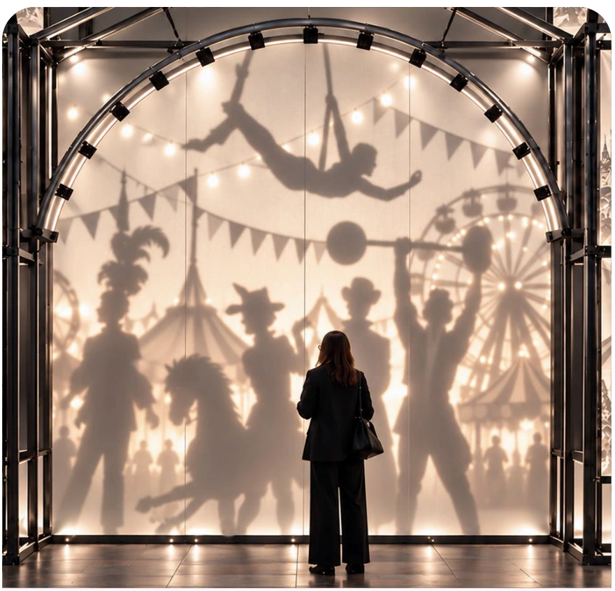

Прибор в зале
Загружаем модель прибора…
Как работает прибор
Что проверить на макете
Посмотреть исходный эскиз «Праздник»

Посетитель в зале
Чистовая версия
Здесь появится чистовой ролик.
Драфт
Загружаем модель прибора…

Здесь появится чистовой ролик.